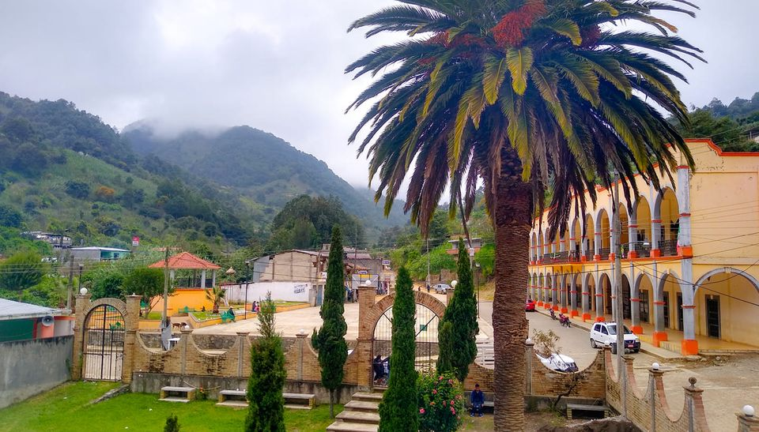
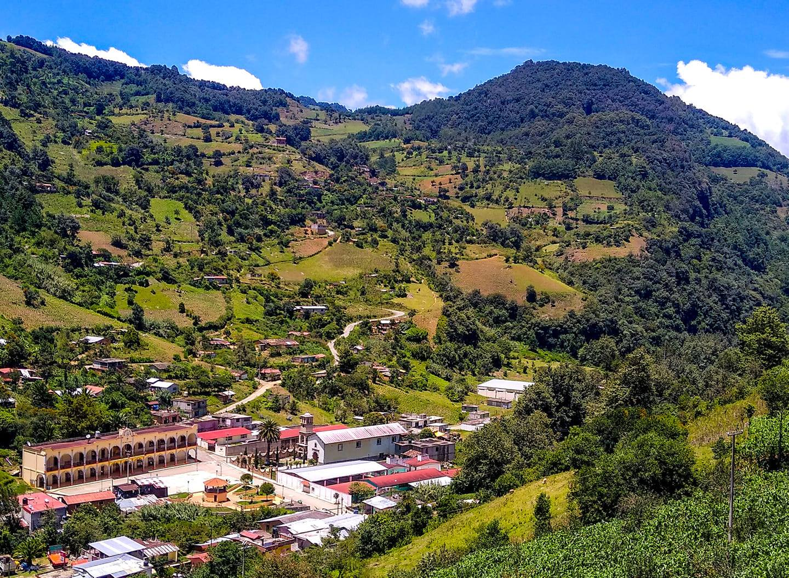
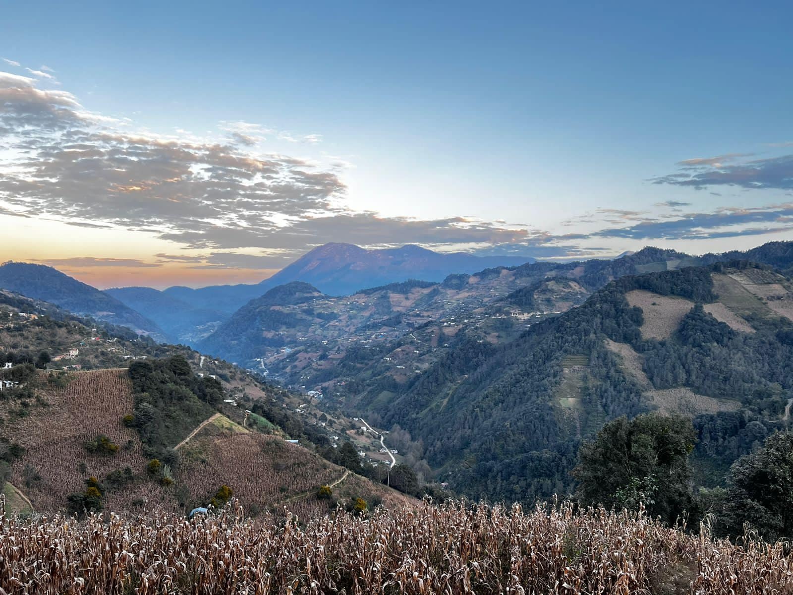
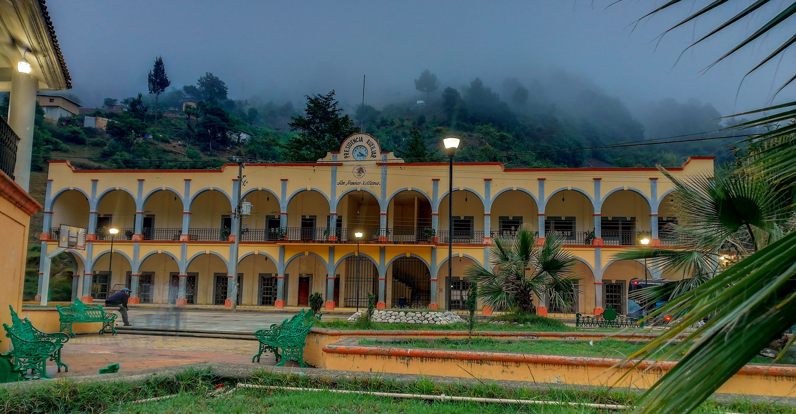
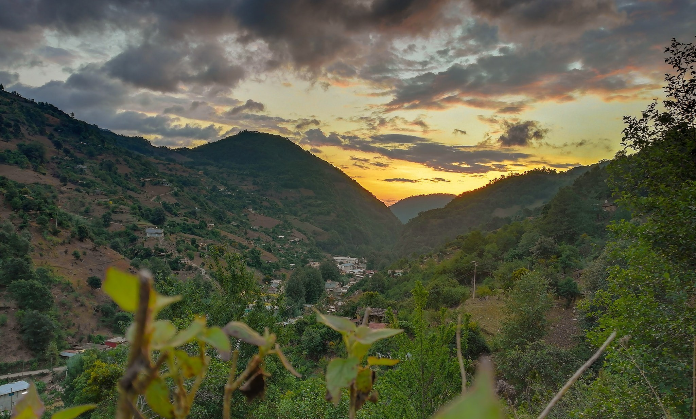
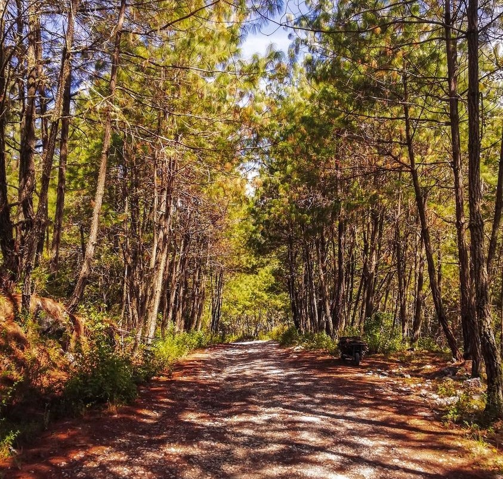
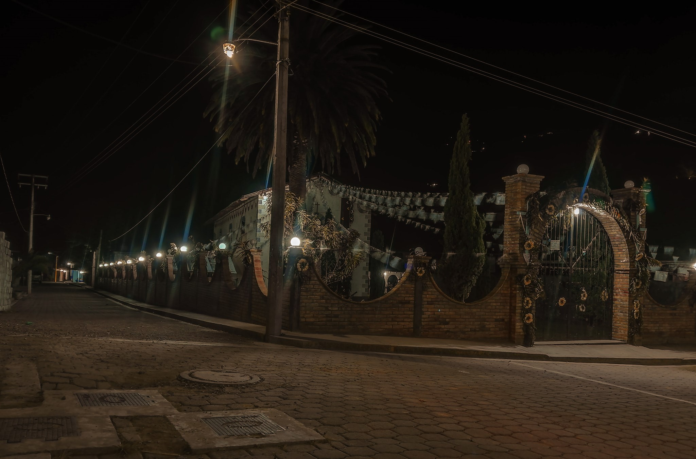
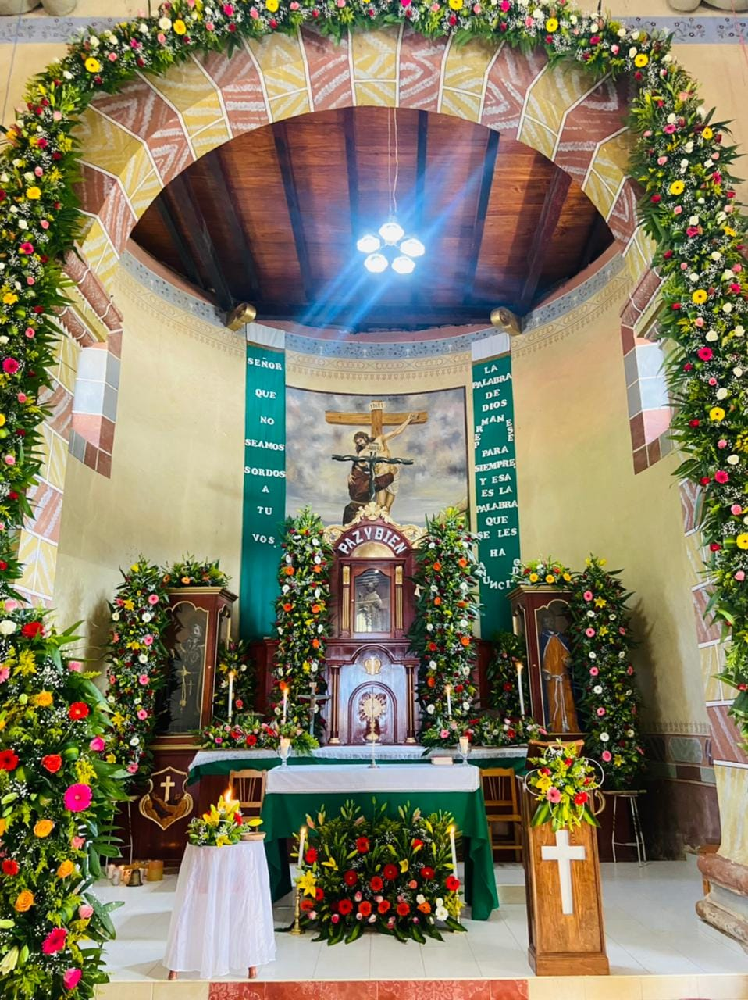
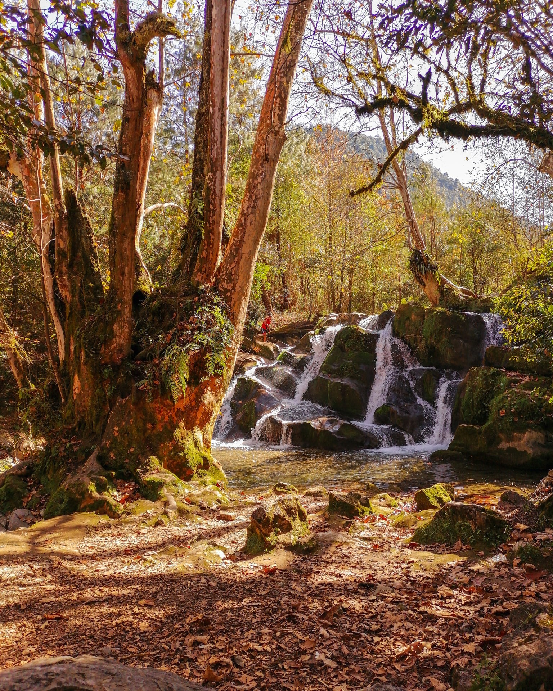

Conoce su Historia

1Historia
Hace muchos años, se llevó a cabo un acuerdo entre los príncipes y la gente de Xitlama para establecer un nuevo asentamiento y distribuir los tributarios de manera justa.
Un grupo inicial de 150 tributarios emprendió un viaje hacia un lugar cercano, ascendiendo por la loma y dirigiéndose hacia el oriente a través de la cañada hasta llegar a un estrecho valle.
Allí, decidieron erigir un templo y rendir culto a una imagen que representaba a un ser humano desnudo. En honor a esta figura, bautizaron al pueblo como Xitlastic, que significa 'encuerado' en su lengua nativa.
Galeria







Atractivos Turisticos:

Cada año, durante la fiesta patronal en honor al Patron San Isidro Labrador, el pueblo se llena de alegría, color y fervor religioso, convirtiéndose en un evento esperado por todos.

La iglesia de San Francisco Xitlama es un tesoro arquitectónico y espiritual que se erige majestuosamente en el corazón de este encantador pueblo.
